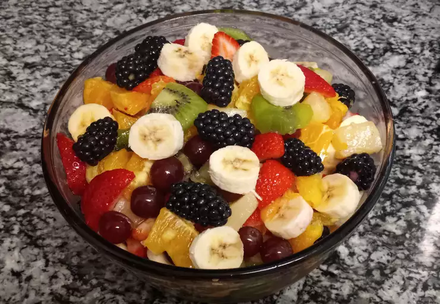

Fruit Salad

Description:
This fruit salad is perfect for a backyard bbq or any occasion. There are
never leftovers! This is one of my favorite fruit salad recipes, as I
think the citrusy sauce really makes it. This salad is tastier the longer
you can let it soak in its juices. I prefer 3 to 4 hours in the
refrigerator before I serve it.
Ingredients:
- Sauce:
- ⅔ cup fresh orange juice.
- ⅓ cup fresh lemon juice.
- ⅓ cup packed brown sugar.
- ½ teaspoon grated orange zest.
- ½ teaspoon grated lemon zest.
- 1 teaspoon vanilla extract.
- Salad:
- 2 cups cubed fresh pineapple.
- 2 cups strawberries, hulled and sliced.
- 3 kiwi fruit, peeled and sliced.
- 3 bananas, sliced.
- 2 oranges, peeled and sectioned.
- 1 cup seedless grapes.
- 2 cups blueberries.
Step(s):
-
For the sauce: Bring orange juice, lemon juice, brown sugar, orange
zest, and lemon zest to a boil in a saucepan over medium-high heat.
Reduce heat to medium-low and simmer until slightly thickened, about 5
minutes. Remove from heat and stir in vanilla extract. Set aside to
cool.
-
For the salad: Layer fruit in a large, clear glass bowl in this order:
pineapple, strawberries, kiwi fruit, bananas, oranges, grapes, and
blueberries. Pour cooled sauce over fruit; cover and refrigerate for 3
to 4 hours before serving.